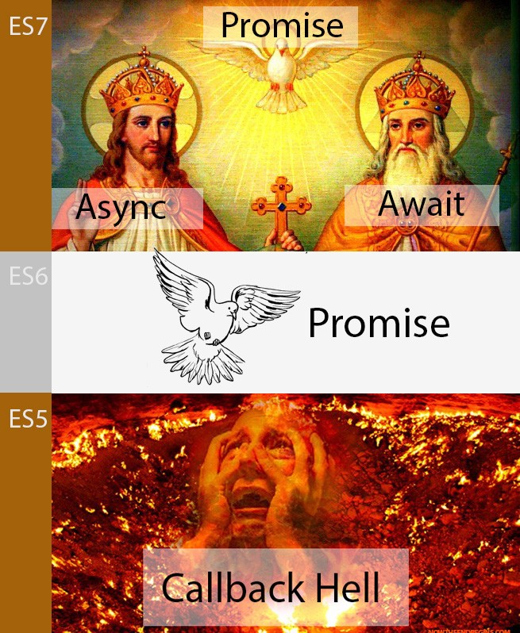

2018/04/04 - Javascript ES6 Promise¶
Why we need Promise? [1]¶
Javascript 有分同步(Synchronous)和非同步(Asynchronous)模式。在同步模式下，每個任務必須按照順序執行，後面的任務要等前面的任務執行完；非同步模式則相反，後面的任務不用等前面的，各自執行各自的任務，例如setTimeout、setInterval都是這種模式。以下面的 code 為例:
setTimeout(function(){
console.log('A');
},1000);
setTimeout(function(){
console.log('B');
},1000);
若想第一秒看到 A 的結果，過一秒再看到 B 的話，我們可能會寫出上面的 Code，但 Javascript 運行後的結果卻是一秒後同時印出 A 和 B。若我們想先達到預期的效果，就必須使用很多的 Callback 來實現這樣同步的例子。
但到了 ES6 ，出現了 Promise 的語法來解決用一堆 Callback (俗成Callback Hell) 的情況。取自 Peter Chang - ES7 Async Await 聖經 [2] 的一段話還有圖片 :
在ES5 時期，Javascript 開發者生活在一個地獄,，叫做Callback Hell。面對著千層 Callback Function，痛苦地 console.log 進行 Debug，消磨生命。直到ES6的降臨，Promise 被指派去拯救開發者脫離煉獄，把千層 Callback Function 扁平化，轉換成為串聯結構，Promise是黑暗隧道中的一道光。今天，Async/Await 是 Promise 的化身，降臨在ES7中。
{kind=link}
Promise 與 Async Await 都是 Javascript 處理同步非同步問題的語法， Async Await 背後處理就是 Promise ，這邊先針對 Promise 作介紹。
What is Promise ?¶
Promise 可以想成他的中文翻譯 - 「承諾」，想像成 A 承諾 B 要去做某件事，A 做完之後才回報結果給 B 作使用，而這個結果只有兩種狀況：成功與失敗，不會有處於成功失敗不明的中間狀況。
所以換成程式的講法，要使用 Promise，一開始要先 new 一個 Promise 物件，物件中的建構式包含兩個參數： resolve ( 成功 ) 與 reject ( 失敗 )。
基本創建 Promise 的方法如下 : resolve 在函式或流程成功，或有合法值的狀況下會執行， reject 則是在失敗或有錯誤的時候會執行， resolve 和 reject 都有一個回傳值，可將這個會傳值透過``.then``傳給下一個流程。
function asyncFunction(value) {
return new Promise(function(resolve, reject){
if(value){
resolve("Success Message"); // 成功
}else{
reject("Failed Message"); // 失敗
}
});
}
使用這個 function 並用 then 去串接 :
asyncFunction(value).then( success => {
console.log(success);
}, failed =>{
console.log(failed);
});
最後的結果，就會根據傳進 asyncFunction(value) 的 ``value``值，去印出是 “Success Message” 或是 “Failed Message” 。
Reference¶
| [1] | JavaScript 同步延遲 ( Promise + setTimeout ) : http://www.oxxostudio.tw/articles/201706/javascript-promise-settimeout.html |
| [2] | [Javascript] ES7 Async Await 聖經 : https://medium.com/@peterchang_82818/javascript-es7-async-await-%E6%95%99%E5%AD%B8-703473854f29-tutorial-example-703473854f29 |